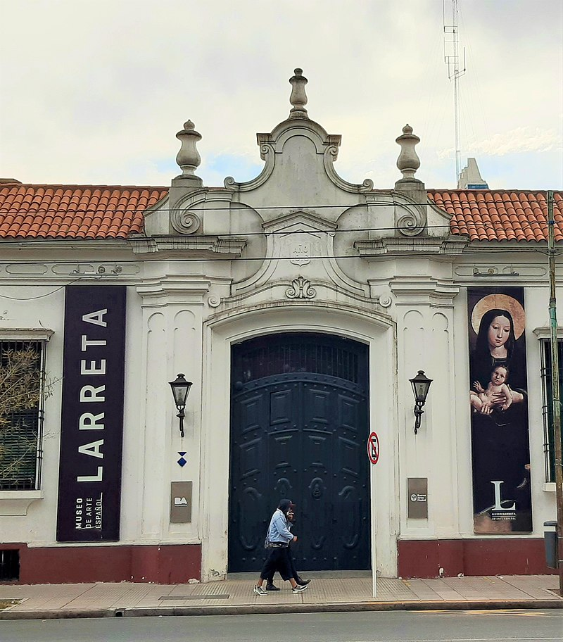

El Museo de Arte Español Enrique Larreta se encuentra en el Barrio de Belgrano, Ciudad de Buenos Aires, Argentina. La casa, de arquitectura neocolonial, fue la residencia del escritor argentino Enrique Larreta, cultor de la literatura y el arte español.
El museo posee una colección de obras que abarcan desde el medioevo hasta principios del siglo XX y un jardín de estilo andaluz que cuenta con un ejemplar de ginkgo biloba y una centenaria glicina.
El museo posee una colección de obras que abarcan desde el medioevo hasta principios del siglo XX y un jardín de estilo andaluz que cuenta con un ejemplar de ginkgo biloba y una centenaria glicina.
También se dictan en el museo cursos, conferencias y seminarios.
